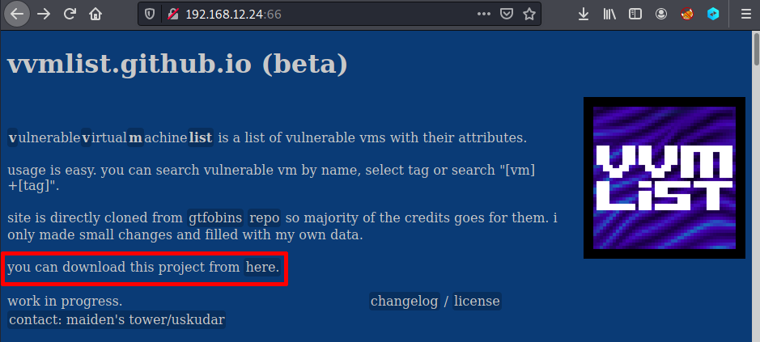
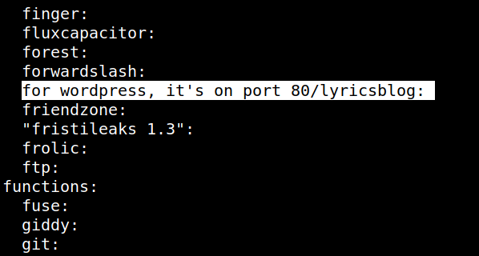
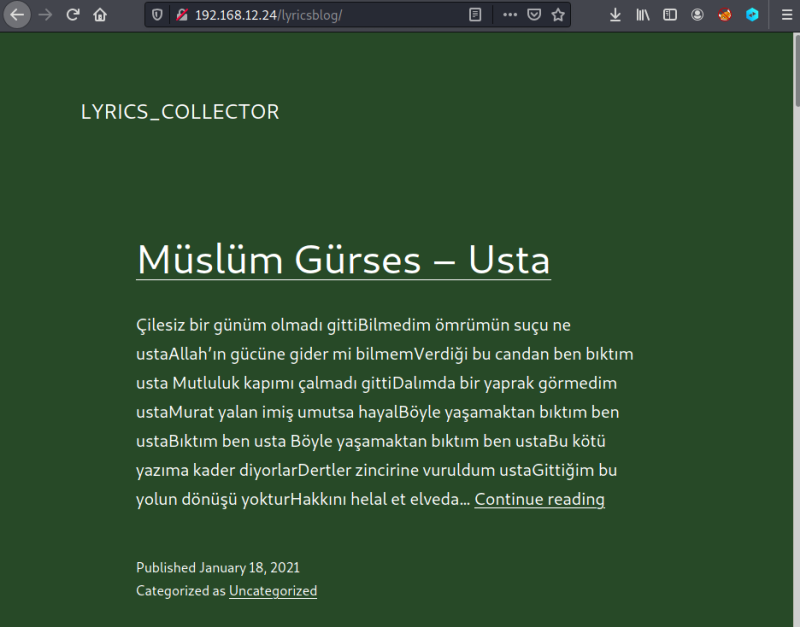

3. Enumerate
1. Visit http://192.168.12.24:66/.

2. Click on the link and download the project.
3. Extract the file “
vvmlist.zip”.4. In a terminal go to “
vvmlist.github.io” directory and run the following command.$cat _vvmlist/* | sort | uniq
Output:

You can see the location of port 80 and it's a Wordpress page.
5. Navigate to http://192.168.12.24/lyricsblog/.

6. It's a Worpress site so we can access to the loging page visiting http://192.168.12.24/lyricsblog/wp-login.php.